Checador es un sistema para registrar electrónicamente la hora de entrada y salida de cada persona trabajadora, como exige la reforma a la Ley Federal del Trabajo (artículo 132, fracción XXXIV). Además de registrar, calcula las horas trabajadas y el tiempo extra, permite al trabajador revisar y confirmar sus horarios, y genera la documentación para una inspección de la STPS o un juicio laboral.
Checador no usa contraseñas. Para entrar recibes un código de 6 dígitos en tu correo.
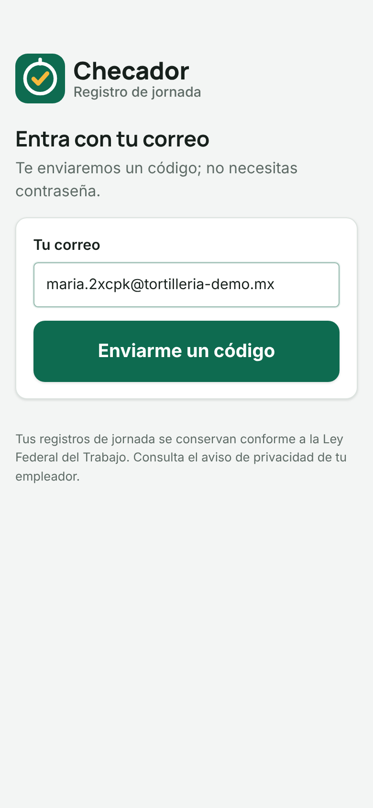
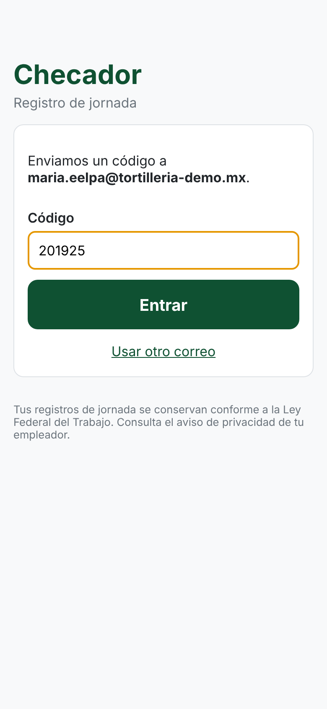
Checador funciona desde el navegador, pero conviene agregarlo a la pantalla de inicio para abrirlo como una app:
| Teléfono | Pasos |
|---|---|
| Android (Chrome) | Abre Checador → menú ⋮ → Agregar a la pantalla principal (o Instalar app). |
| iPhone (Safari) | Abre Checador → botón Compartir (cuadro con flecha) → Agregar a inicio. |
Al entrar, Checador te lleva automáticamente a tu lugar: al panel si eres empleador, a la pantalla para checar si eres trabajador, o al kiosco si es la cuenta de la tableta.
La primera vez que entras sin estar vinculado a ninguna empresa, Checador te pide registrarla. Quien la registra queda como propietario.
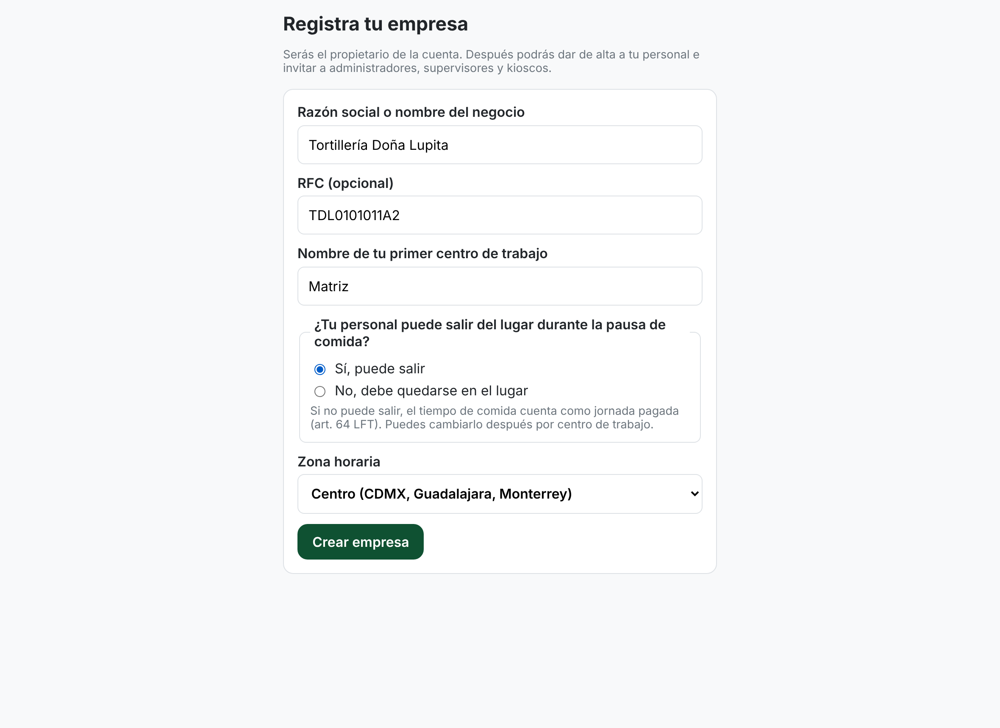
El muestra una lista de Primeros pasos que se marcan solos conforme avanzas y desaparece cuando todo está en orden. Cada paso tiene un enlace para resolverlo.
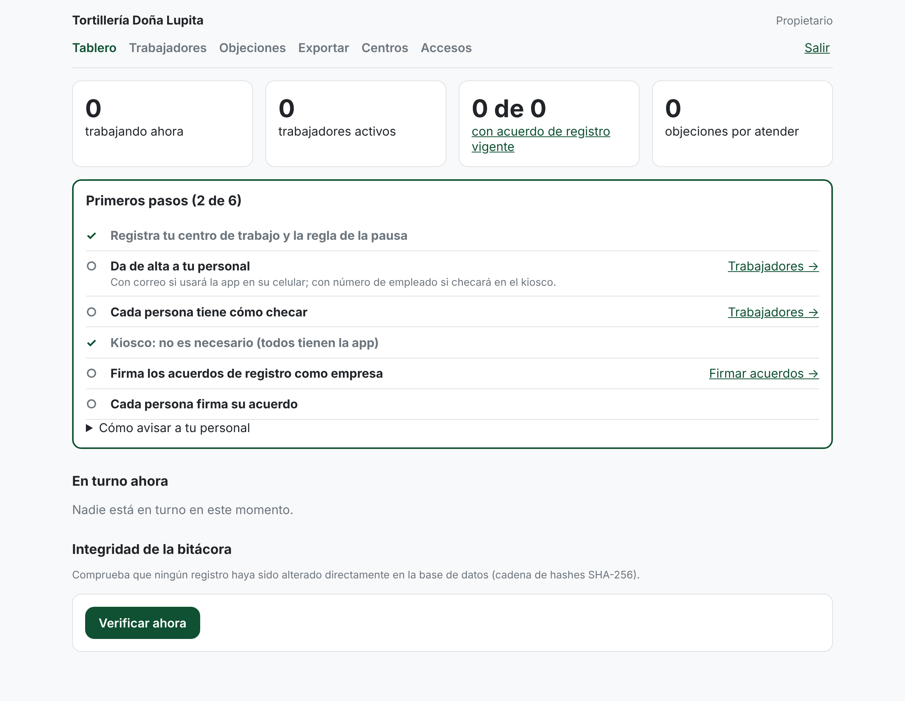
Si más adelante cambias la jornada, el día de descanso o la regla de la pausa de alguien, su acuerdo queda desactualizado y la lista vuelve a aparecer para que firmen una nueva versión.
En , al final de la página, está el formulario Dar de alta.
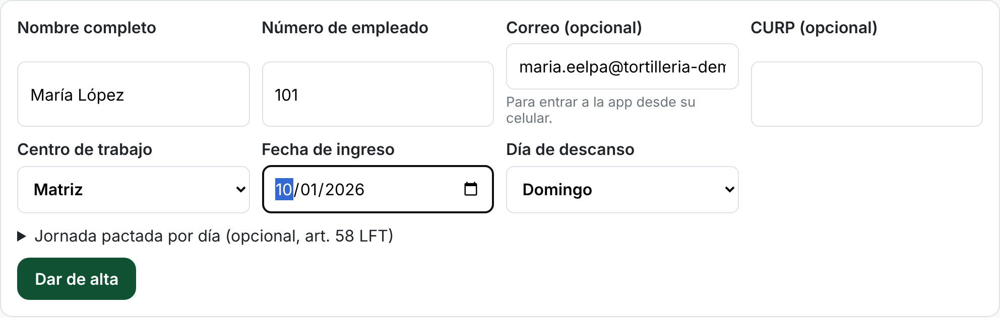
| Campo | Para qué sirve |
|---|---|
| Nombre completo | Aparece en los registros, acuerdos y reportes. |
| Número de empleado | Lo usa para checar en el kiosco. Usa solo dígitos: el teclado del kiosco es numérico. |
| Correo (opcional) | Si lo pones, la persona podrá usar la app en su celular. Al entrar por primera vez con ese correo, su cuenta se vincula sola. |
| CURP (opcional) | Identificación adicional en el acuerdo y en los reportes. |
| Centro, fecha de ingreso, día de descanso | Necesarios para el cálculo de jornada y para el acuerdo. |
| Jornada pactada por día (opcional) | Si acordaron repartir las horas de otra forma (artículo 58 de la LFT), por ejemplo 9.6 horas de lunes a viernes. Si lo dejas vacío, se usa la jornada legal (8 h diurna, 7 h nocturna, 7.5 h mixta). |
En la ficha de cada trabajador está la sección PIN para el kiosco. Escribe un PIN de 4 a 6 dígitos y presiona Asignar PIN. Entrégalo a la persona en privado.
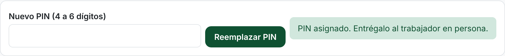
0000 o 1234.El acuerdo establece cómo se registra la jornada: el método (app o kiosco), la jornada y el descanso, la regla de la pausa, cómo se corrigen errores y qué datos personales se tratan. Primero firma la empresa y después el trabajador.
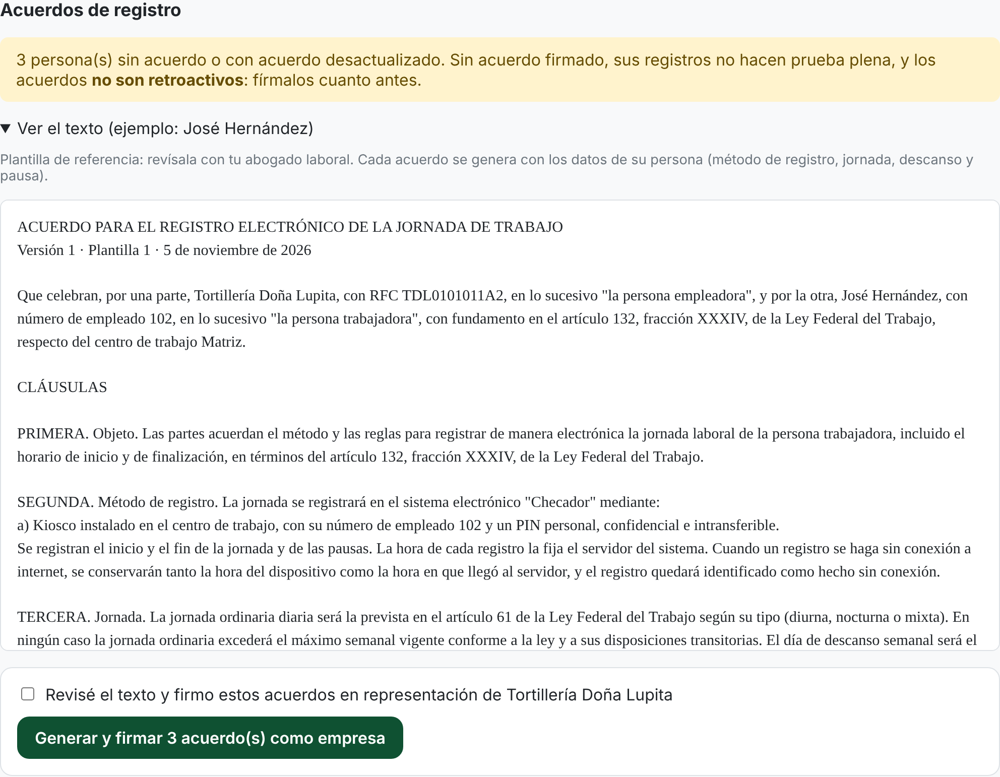
La columna Acuerdo de la lista muestra el estado de cada persona:
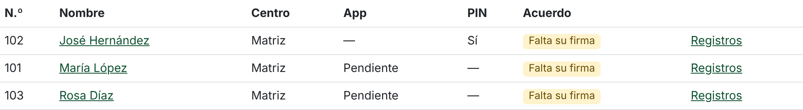
| Estado | Qué significa |
|---|---|
| Sin acuerdo | Aún no se ha generado. Sus registros no tienen el respaldo de un acuerdo firmado. |
| Falta su firma | La empresa ya firmó; falta la persona trabajadora. |
| Vigente | Firmado por ambas partes. |
| Desactualizado | Cambió algún dato (jornada, descanso, pausa, método). Hay que firmar una versión nueva; la anterior sigue vigente mientras tanto. |
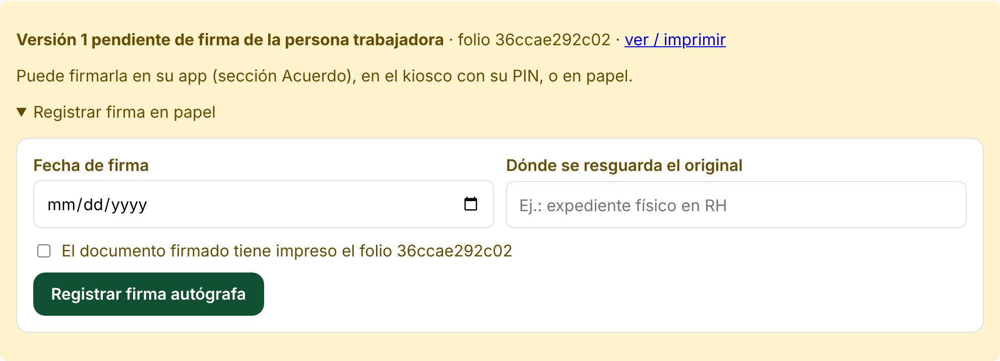
El kiosco es una tableta o un teléfono fijo donde checan las personas sin celular o sin correo.
kiosco.matriz@tuempresa.mx) con el rol Kiosco y, si quieres, limitado a un centro de trabajo.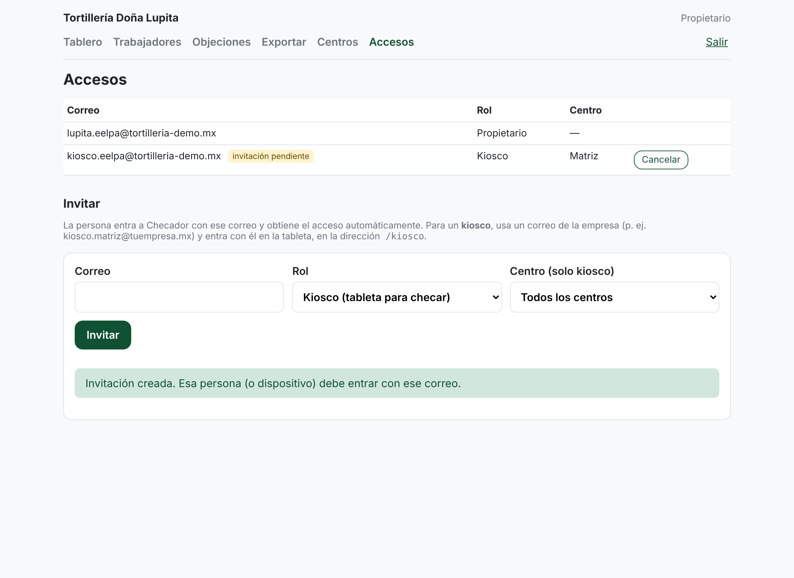
En defines cada sucursal: nombre, dirección, zona horaria y si el personal puede salir durante la pausa de comida. Esta regla se aplica automáticamente a todas las checadas del celular y del kiosco.
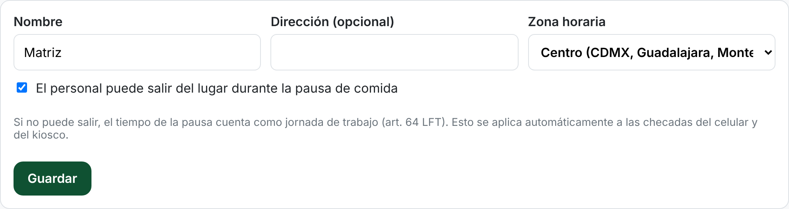
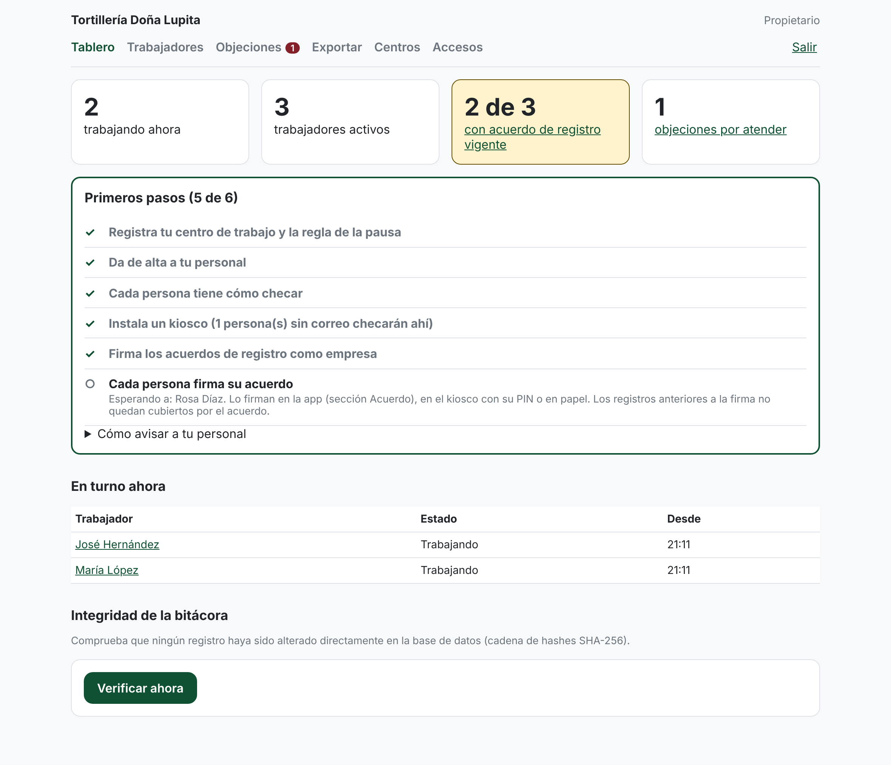
En → Registros (o desde el nombre en el tablero) ves la semana de cada persona: turnos, pausas, horas trabajadas y tiempo extra. Usa Anterior y Siguiente para cambiar de semana.
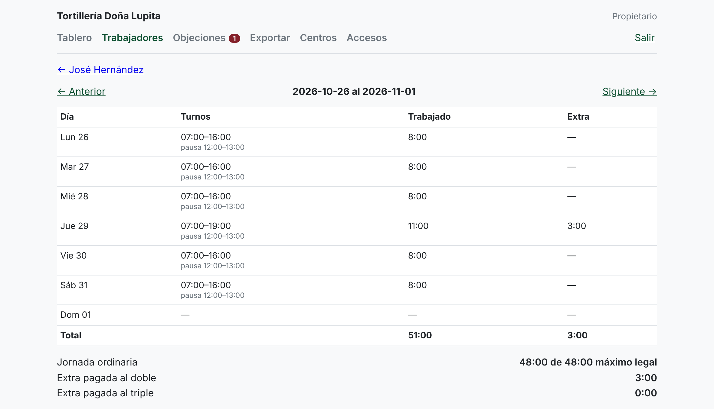
Checador calcula automáticamente:
En la parte de abajo de la semana está la Bitácora con cada checada y su origen (celular, kiosco o panel). En cada registro, Corregir o anular permite:
Para una checada que nunca se hizo (por ejemplo, olvidó checar su salida), usa Agregar checada faltante, al final de la página.
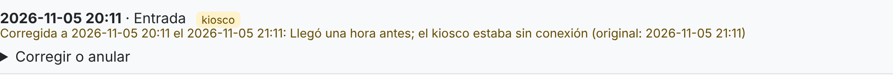
Cuando un trabajador marca una semana como incorrecta, aparece en con su comentario.
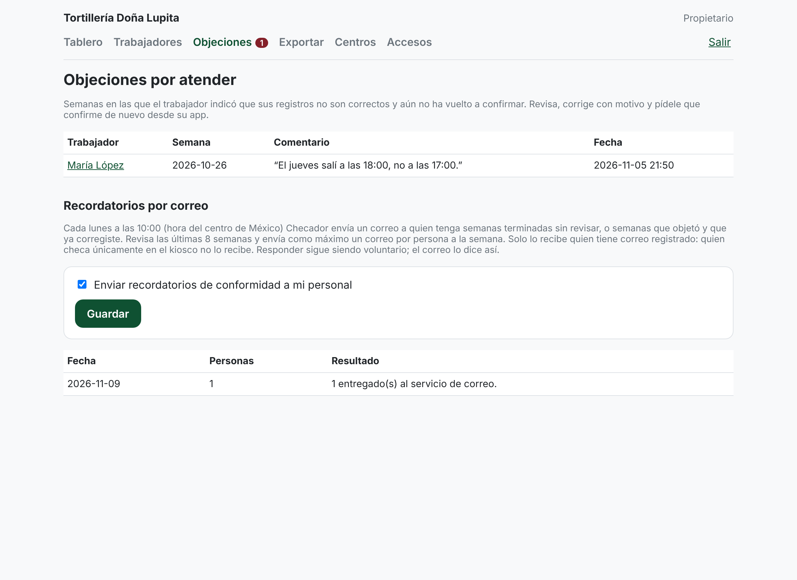
Cada lunes a las 10:00 (hora del centro de México), Checador envía un correo a quien tenga semanas terminadas sin revisar, o semanas que objetó y que ya corregiste, con un enlace a cada semana. Revisa las últimas 8 semanas y envía como máximo un correo por persona a la semana. Solo lo recibe quien tiene correo registrado.
Al final de la página , el propietario o un administrador pueden apagarlos o encenderlos para toda la empresa. Ahí mismo se ve cuántas personas los recibieron cada lunes y si alguno no se pudo enviar.
En generas los documentos que pide la STPS en una inspección o que se presentan en un juicio laboral.
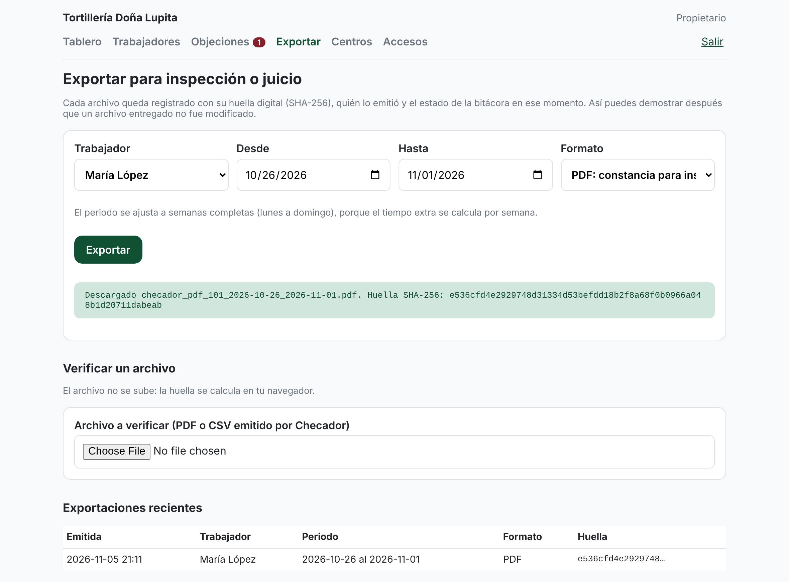
| Formato | Contenido |
|---|---|
| PDF (por trabajador) | Constancia completa: datos laborales, integridad de la bitácora, acuerdos y firmas, resumen semanal con conformidades y bitácora completa. |
| CSV bitácora | Cada registro, incluidas correcciones y anulaciones. Se abre en Excel. |
| CSV resumen | Horas por día y por semana, con tiempo extra. |
En invitas a otras personas por correo. Al entrar con ese correo obtienen su acceso automáticamente.
| Puede… | Propietario | Administrador | Supervisor | Kiosco |
|---|---|---|---|---|
| Ver tablero, registros y objeciones | ✓ | ✓ | ✓ | — |
| Corregir, anular o agregar checadas | ✓ | ✓ | ✓ | — |
| Exportar | ✓ | ✓ | ✓ | — |
| Dar de alta y de baja, asignar PIN, firmar acuerdos | ✓ | ✓ | — | — |
| Configurar centros, invitar supervisores y kioscos | ✓ | ✓ | — | — |
| Invitar o quitar administradores | ✓ | — | — | — |
| Registrar checadas con número y PIN | — | — | — | ✓ |
En la ficha del trabajador, sección Baja: indica la fecha, escribe BAJA para confirmar y presiona Registrar baja. La persona ya no podrá checar, pero sus registros se conservan, como exige el artículo 804 de la LFT (durante la relación laboral y un año después), y se pueden seguir exportando.
Entra con tu correo como se explica en la sección 2. La primera vez, tu cuenta se vincula sola con el registro que hizo tu empleador. Si te dice "Tu cuenta aún no está vinculada", pide a tu empleador que te dé de alta con ese mismo correo.
Cuando tu empleador te envía el acuerdo, aparece un aviso amarillo al entrar. Tócalo o ve a la sección Acuerdo.
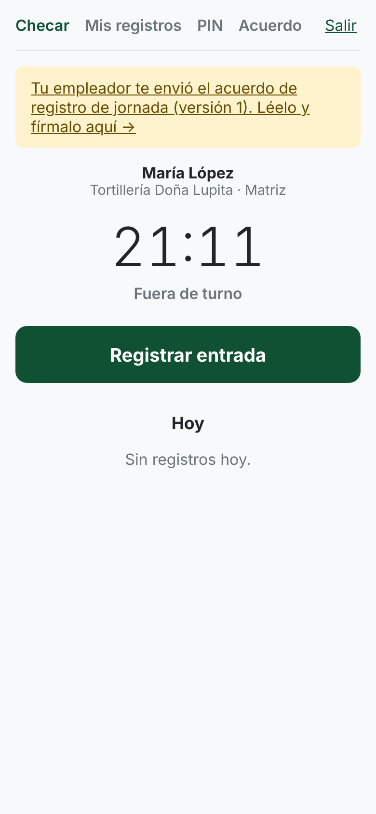
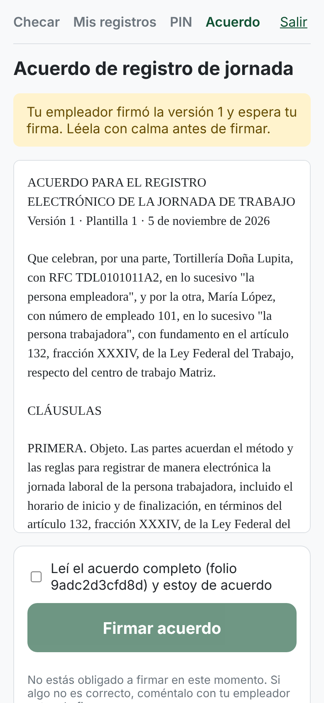
No estás obligado a firmar en ese momento. Si algo no es correcto, coméntalo con tu empleador antes de firmar.
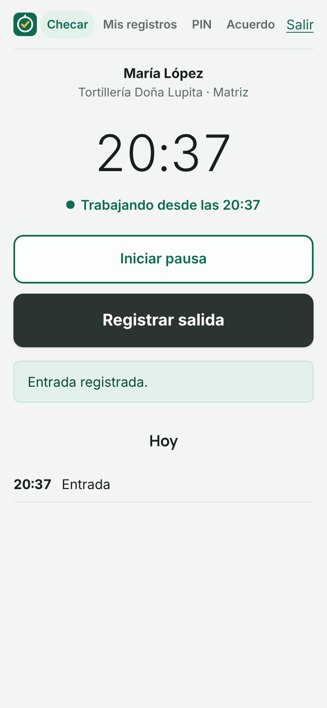
La pantalla Checar muestra la hora y solo los botones que corresponden:
Abajo aparecen tus registros del día.
En Mis registros ves cada semana: turnos, pausas, horas y tiempo extra. Cuando termina la semana puedes confirmarla:
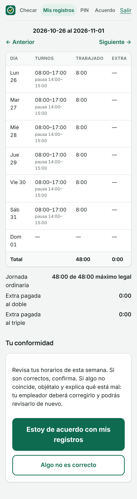
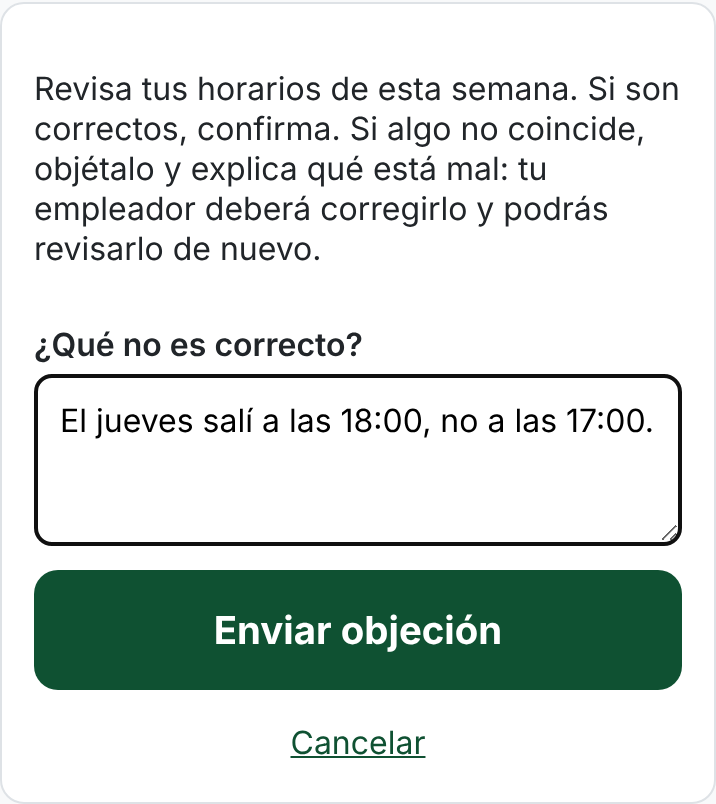
Al responder recibes un comprobante con un número de registro. Guárdalo: sirve para demostrar qué semana confirmaste.
Si tienes semanas sin revisar, o tu empleador corrigió una semana que objetaste, los lunes te llega un correo de Reloj Checador con un enlace a cada una.
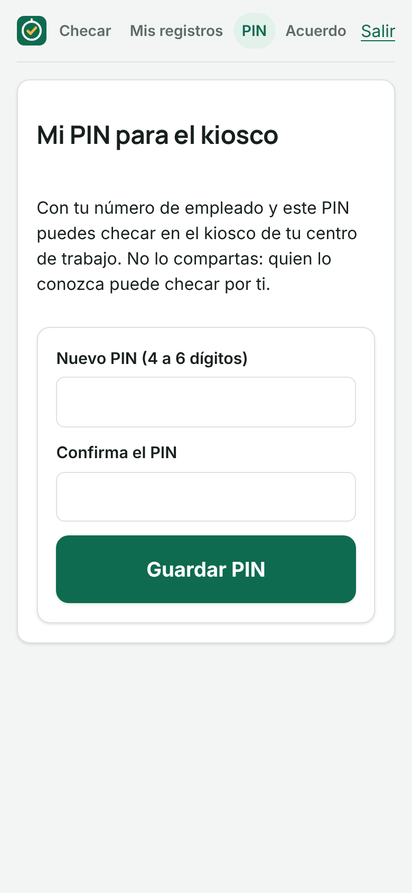
Si en tu centro hay kiosco, en la sección PIN puedes elegir tu propio PIN de 4 a 6 dígitos. No lo compartas: quien lo conozca puede checar por ti.
Para checar en la tableta del centro de trabajo solo necesitas tu número de empleado y tu PIN.
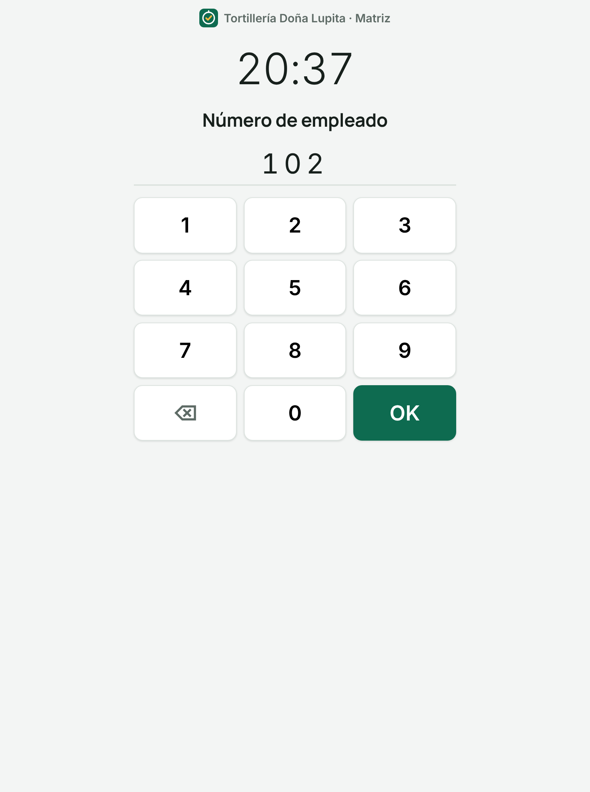
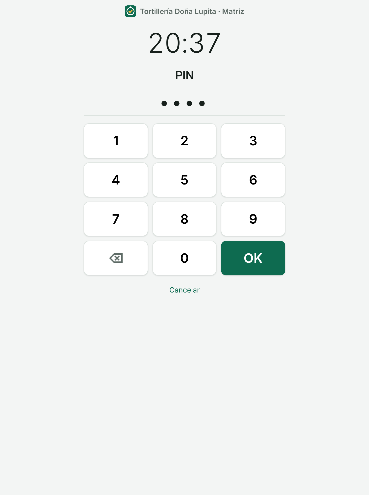
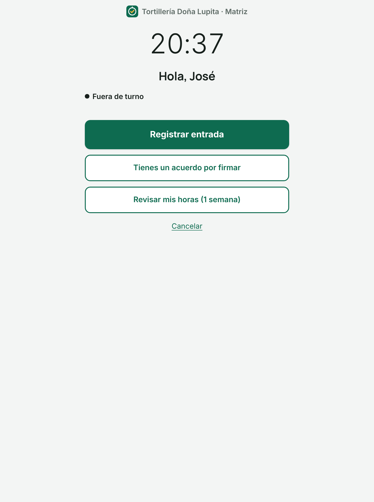
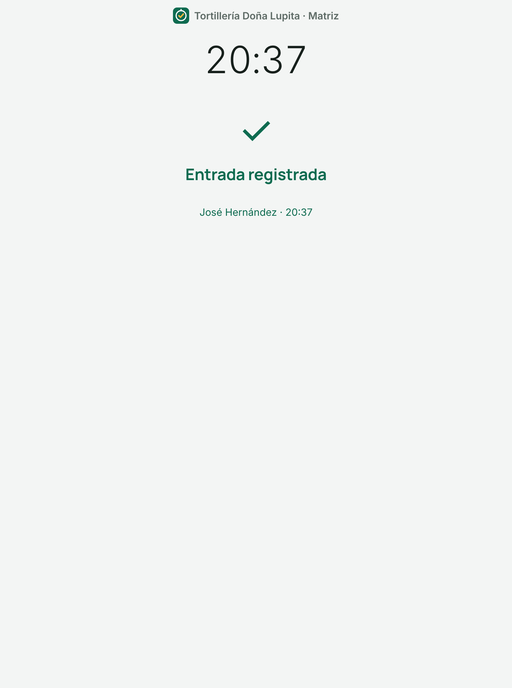
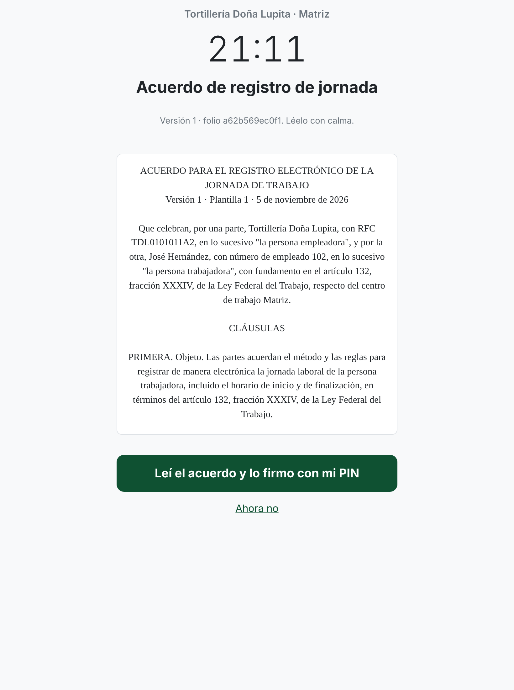
| Situación | Qué hacer |
|---|---|
| No me llega el código | Espera un par de minutos y revisa spam o promociones. Verifica que el correo esté bien escrito. Si pediste muchos códigos, espera unos minutos. |
| "Código incorrecto o vencido" | El código dura 15 minutos y se usa una vez. Pide uno nuevo. |
| "Tu cuenta aún no está vinculada" | Tu empleador debe darte de alta con el mismo correo con el que entraste. Después sal y vuelve a entrar. |
| Olvidé checar mi salida | Avisa a tu empleador: la agrega desde el panel con Agregar checada faltante y un motivo. |
| Checé dos veces por error | El empleador anula la checada duplicada con motivo. Si entrada y salida quedaron en el mismo minuto, ese turno no se cuenta y aparece como incidencia. |
| Me llegan correos de "semanas por revisar" | Son los recordatorios de los lunes. Dejan de llegar cuando respondes esas semanas. El empleador puede apagarlos para toda la empresa en Objeciones. |
| Mis horas de la semana no son correctas | En Mis registros, al terminar la semana, presiona Algo no es correcto y explica qué está mal. |
| ¿Se puede borrar un registro? | No. Para que el registro sea válido como prueba, nada se borra: se corrige o se anula con motivo y el original queda visible. |
| Cambié de celular | Abre Checador en el nuevo y entra con tu correo. Tus registros están en el servidor, no en el teléfono. |
| Un trabajador no quiere firmar el acuerdo | No se le puede obligar. Sus registros siguen siendo prueba, aunque no prueba plena. Conviene aclarar sus dudas sobre el texto. |
| Cambié la jornada o el día de descanso de alguien | Su acuerdo queda desactualizado: firma la nueva versión y pídele que la firme. La anterior sigue vigente mientras tanto. |
| El kiosco dice "Este dispositivo no está configurado" | La cuenta con la que se entró en la tableta no tiene el rol de kiosco. Invítala desde Accesos y vuelve a cargar la página. |
| "Verificar ahora" muestra una alerta de alteración | No corrijas nada. Exporta los registros y contacta a soporte de inmediato. |
| Término | Significado |
|---|---|
| Bitácora | Lista de todas las checadas, correcciones y anulaciones, en el orden en que ocurrieron. No se puede borrar ni modificar. |
| Checada | Registro de entrada, salida, inicio o fin de pausa. |
| Acuerdo de registro | Documento firmado por empleador y trabajador que establece cómo se registra la jornada. Da al registro valor de prueba plena (art. 132, fr. XXXIV, LFT). |
| Conformidad | Confirmación semanal del trabajador de que sus horarios son correctos. |
| Objeción | Aviso del trabajador de que algo en su semana no es correcto, con su explicación. |
| Corrección / anulación | Ajuste a una checada hecho por el empleador con un motivo. El registro original se conserva. |
| Sin conexión (diferida) | Checada hecha sin internet y enviada después. Se guardan la hora del dispositivo y la hora en que llegó. |
| Kiosco | Tableta compartida donde se checa con número de empleado y PIN. |
| Jornada ordinaria / tiempo extra | Horas normales de trabajo y horas adicionales. El extra se paga al doble y, por encima de los límites, al triple (arts. 66 y 68 LFT). |
| Huella digital (SHA-256) | Código que identifica de forma única el contenido de un registro o archivo. Cualquier cambio produce una huella distinta. |
Checador es una herramienta de registro y no sustituye la asesoría legal. Las referencias a la Ley Federal del Trabajo corresponden al texto vigente tras la reforma publicada en el DOF el 1 de mayo de 2026.